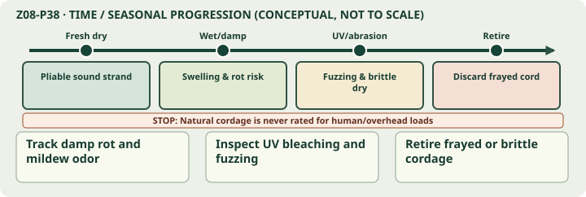

Z08-P38 · Rocks, minerals and materials · New manuscript
Retting, Moisture Cycling and Natural Fiber Degradation
Recognize how moisture, rot bacteria, sunlight UV, and abrasion degrade plant fibers and manufactured cordage over time.
When it applies · Inspecting stored natural fibers and field cordage before light utility tasks.
Equipment · Visual and gentle hand-tension check.

Actions
- Recognize that wet storage accelerates microbial rot in natural bast and cotton fibers, cutting strength drastically before visible breakage.[R18]
- Inspect both natural fibers and synthetic cords for UV sun-bleaching, stiff chalky texture, fuzzing abrasion, and knot-pinch flattening.[R18, K04]
- Dry wet cordage thoroughly in shade with airflow and retire any frayed, mildewed, or sun-brittle cord before use.[R18, K04]
Failure recognition · Packing damp natural twine in sealed bags breeds rot rapidly and causes unexpected snaps during camp utility tasks.[R18]
Verify · Cordage is dry, flexible, unfrayed, and restricted strictly within non-life-safety limits.[R18, K04]
Stop or change course · Stop using any cordage that smells musty, sheds powdery dust, snaps under light hand pull, or shows melted/cut strands.[R18, K04]
Evidence and editorial notes
- K04 · USDA Forest Service · Handtools for Trail Work (0523-2810-MTDC) (agency handbook)
- Section: Sharpening, Filing and Handle Maintenance · Conditions: Maintaining cutting edges and wood tool handles in field or shop
Support: Secure the tool firmly before filing or honing, keep fingers behind file guards, preserve factory bevel geometry without overheating steel and replace loose or cracked handles rather than taping them.
Limitations: Field touch-up honing does not correct chipped, cracked or heat-annealed steel blades. · Conflicting evidence: None; separates routine edge maintenance from unsafe handle patching.
Editorial note: Guides sharpening, rust prevention and handle-failure retirement cards. · Specialist reviewer: Tool maintenance and forestry safety
Primary source · checked 2026-11-24 - R18 · Minnesota DNR · Minnesota Native Plant Communities and Biomes (Current web edition)
- Section: Natural plant fiber harvest limits and conservation ethics · Conditions: Bast fibers, rushes, sedges, and woody stems in regional biomes
Support: Harvesting fibrous plants without landowner permission or in protected native plant communities damages ecosystems and may violate law.
Limitations: Strength of hand-twisted plant cordage varies sharply with retting, moisture, and knots; never assign life-safety loads. · Conflicting evidence: None noted.
Editorial note: Connects Z08 fibers to Z09 load limits and law. · Specialist reviewer: Botanist and materials specialist
Primary source · checked 2026-11-25
Source lineage · New manuscript (Z08 P16 material degradation) · Classification · New manuscript.